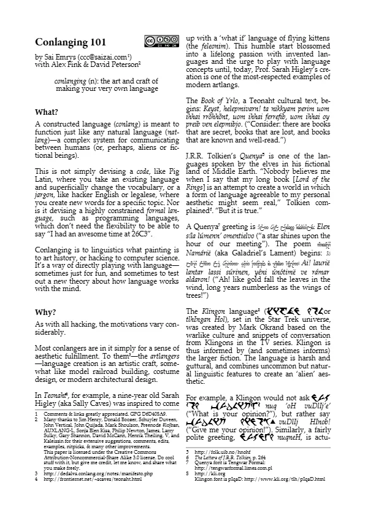
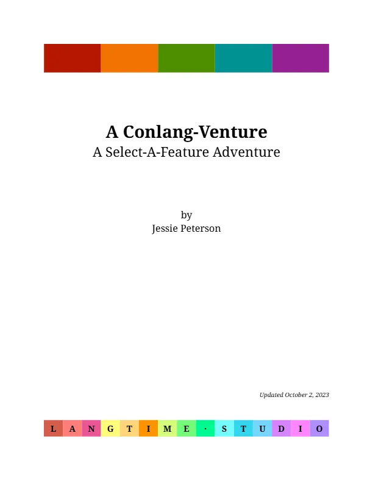
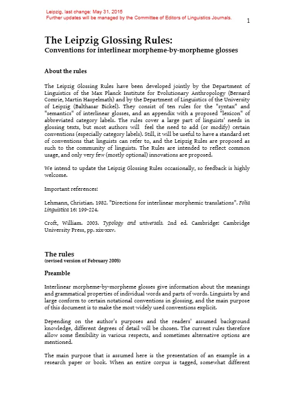
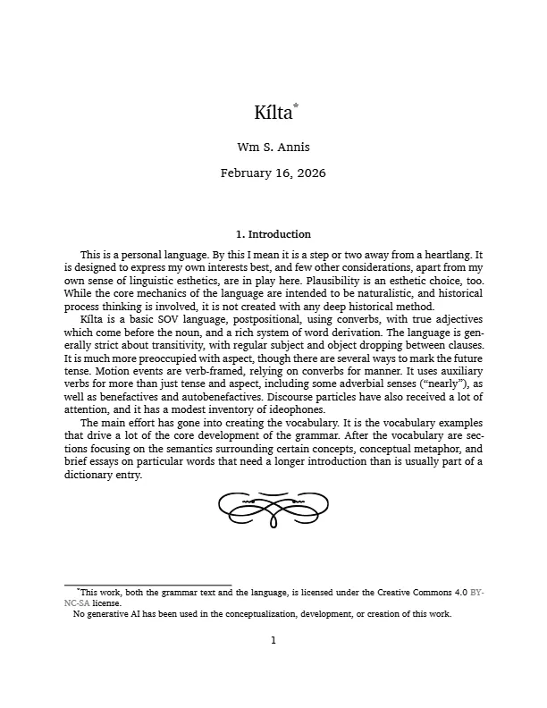

Конлангинг
Conlanging 101

Краткий cheat sheet о конлангинге
The Language Construction Kit
 Лучший, по моему мнению, гайд для начинающих конлангеров, не считая "How To Create a Language: The Conlang Guide", которого ещё нет в свободном доступе
Лучший, по моему мнению, гайд для начинающих конлангеров, не считая "How To Create a Language: The Conlang Guide", которого ещё нет в свободном доступеAdvanced Language Construction Kit
 И его старший брат соответственно, где затронуты более продвинутые концепты
И его старший брат соответственно, где затронуты более продвинутые концептыThe Art of Language Invention
 Эта книга уже многие годы является "библией" конлангерского сообщества (хотя потихоньку и устаревает – в ней не мало полезных для закрепления вещей)
Эта книга уже многие годы является "библией" конлангерского сообщества (хотя потихоньку и устаревает – в ней не мало полезных для закрепления вещей)A Conlang Venture

Ещё один прекрасный ресурс для новичков, желающих ознакомиться с процессом конлангинга не "опуская ног в воду"
A Conlanger's Thesaurus
 Классный ресурс для помощи с лексикой, наглядно демонстрирующий возможное этимологическое родство
Классный ресурс для помощи с лексикой, наглядно демонстрирующий возможное этимологическое родствоConlanging Should Be Fun
 Гайд по mindset-у для конлангинга и не только
Гайд по mindset-у для конлангинга и не толькоThe Leipzig Glossing Rules

Золотой стандарт для всех лингвистических глоссов
The Unfolding of Language
 О том, как языки постепенно усложняются и изменяются со временем
О том, как языки постепенно усложняются и изменяются со временемВозникновение грамматических структур, повседневных выражений, и ещё много чего ещё об исторической лингвистике с множеством примеров из разных языков мира
Trask's Historical Linguistics
 Учебное пособие, посвящённое основам исторического языкознания
Учебное пособие, посвящённое основам исторического языкознанияМного чего о том, как языки изменяются во времени и как лингвисты реконструируют их прошлые стадии
Звуковые изменения, аналогия, грамматикализация, языковые контакты и методы сравнительно-исторического анализа
Historical Linguistics: An Introduction
Опять же звуковые изменения, морфологическая и синтаксическая эволюция, семантические сдвиги, а также принципы сравнительно-исторического метода
Значительное внимание уделяется реконструкции праязыков
Handbook of the IPA
 Подробный гайд по использованию международного фонетического алфавита с примерами из разных языков
Подробный гайд по использованию международного фонетического алфавита с примерами из разных языковKílta

Чрезвычайно красиво и профессионально оформленная документация конланга, после неё я и вдохновился заняться Typst-ом
A Descriptive Grammar of Siwa
 Сам до неё не дошёл, но на Reddit-е народ рекоммендует, так что всё равно сюда вставлю
Сам до неё не дошёл, но на Reddit-е народ рекоммендует, так что всё равно сюда вставлюToki Pona: The Language of Good
 Основопологающий ресурс для изучения TokiPona с нуля
Основопологающий ресурс для изучения TokiPona с нуля